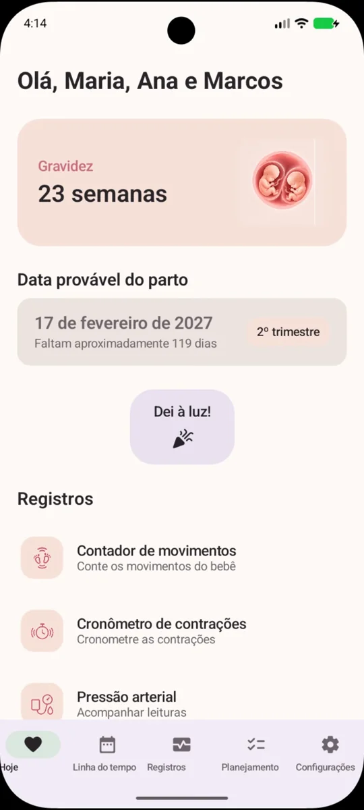
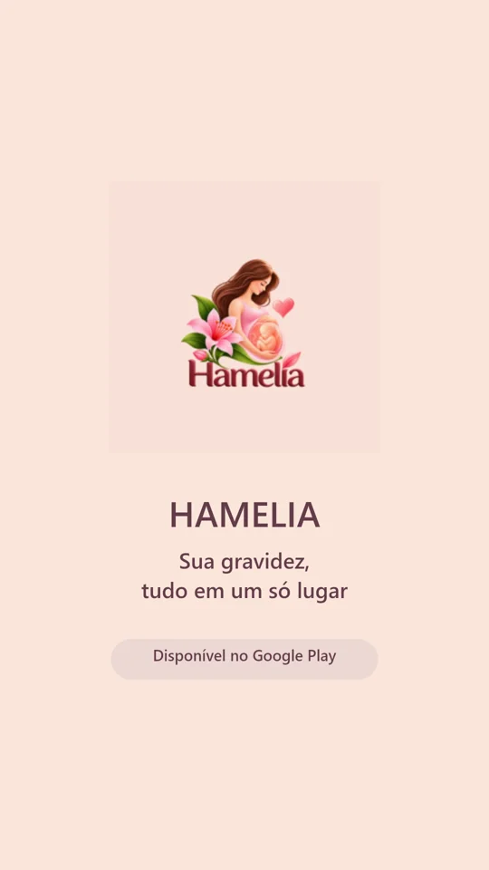

Movimentos do bebê
Conte os movimentos do seu bebê e guarde o registro de cada sessão.
Acompanhe sua gravidez
semana a semana

HAMELIA
Acompanhe sua gravidez semana a semana com Hamelia. Descubra cada etapa e reúna seus registros e lembranças em um aplicativo para Android.
Aplicativo Android · Acompanhamento da gravidez

HAMELIA
Descubra cada etapa com as ilustrações e as informações semanais de Hamelia, adaptadas à sua gestação.
Está esperando mais de um bebê? Hamelia acompanha gestações de 1 a 5 bebês e adapta o acompanhamento ao número de bebês da sua gestação.


HAMELIA · ANDROID
As ferramentas essenciais de acompanhamento da gravidez são sempre gratuitas, para acompanhar você no dia a dia.
Conte os movimentos do seu bebê e guarde o registro de cada sessão.
Cronometre suas contrações e salve os registros para consultar depois.
Anote suas medições de pressão arterial e pulso para consultar no aplicativo.
Salve seus registros de peso e acompanhe as mudanças ao longo da gravidez.
Anote seus sintomas e como você se sente para lembrar cada dia da gravidez.
Registre medicamentos e suplementos.
Organize suas fotos da gravidez por semana e reviva suas lembranças.
O aplicativo oferece recursos Premium. Consulte o Google Play para ver os detalhes e as compras disponíveis.


HAMELIA
Organize suas lembranças da gravidez por semana e reviva os pequenos momentos que fazem essa história.
Informações semanais, ferramentas e lembranças. Encontre Hamelia no Google Play.
Disponível no Google PlayO aplicativo oferece recursos Premium. Consulte o Google Play para ver os detalhes e as compras disponíveis.
